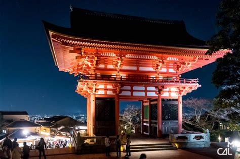

Kiyomizu-dera

Situé à l’est de Kyoto, le temple Kiyomizu-dera est l’un des monuments les plus emblématiques du Japon. Fondé au VIIIᵉ siècle, il est célèbre pour sa grande terrasse en bois construite sans aucun clou, offrant une vue spectaculaire sur la ville et les collines environnantes.
Le temple tire son nom de la cascade Otowa, dont l’eau pure est associée à la santé, à la longévité et à la réussite. Le site est particulièrement apprécié au printemps pour les cerisiers en fleurs et à l’automne pour les érables rouges, qui transforment le paysage en un véritable tableau.
Classé au patrimoine mondial de l’UNESCO, le Kiyomizu-dera est un lieu chargé d’histoire et de spiritualité, incontournable pour découvrir la richesse culturelle et les panoramas exceptionnels de Kyoto.